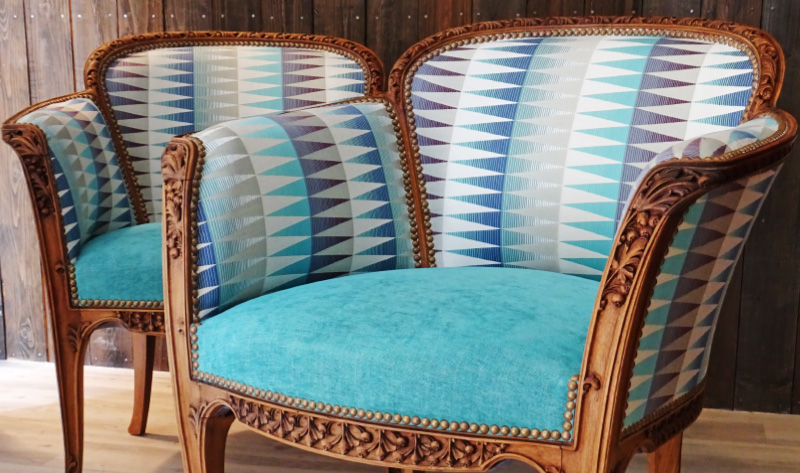
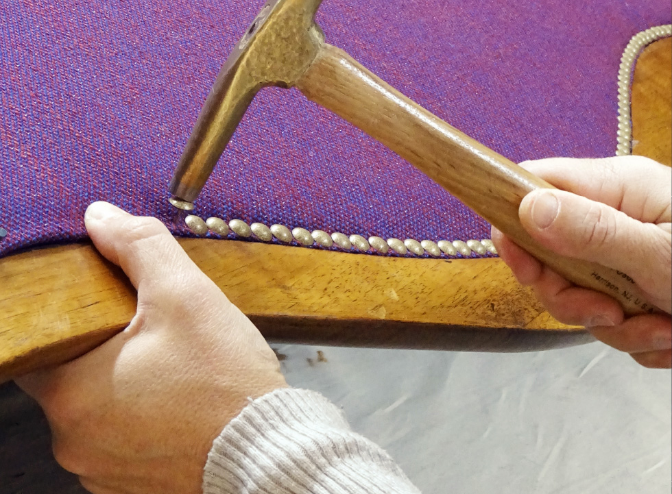
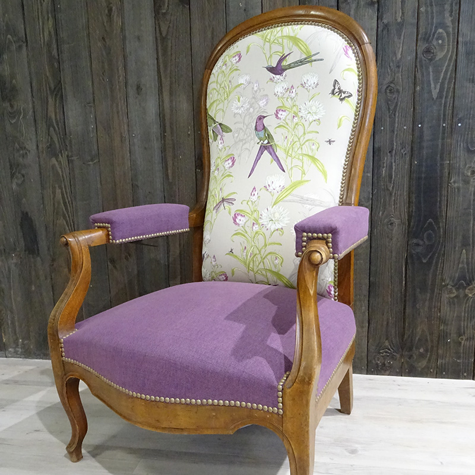
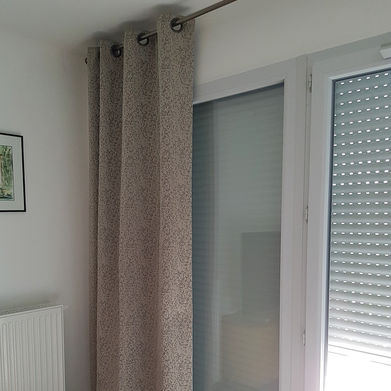
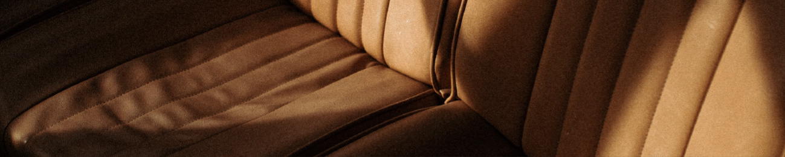
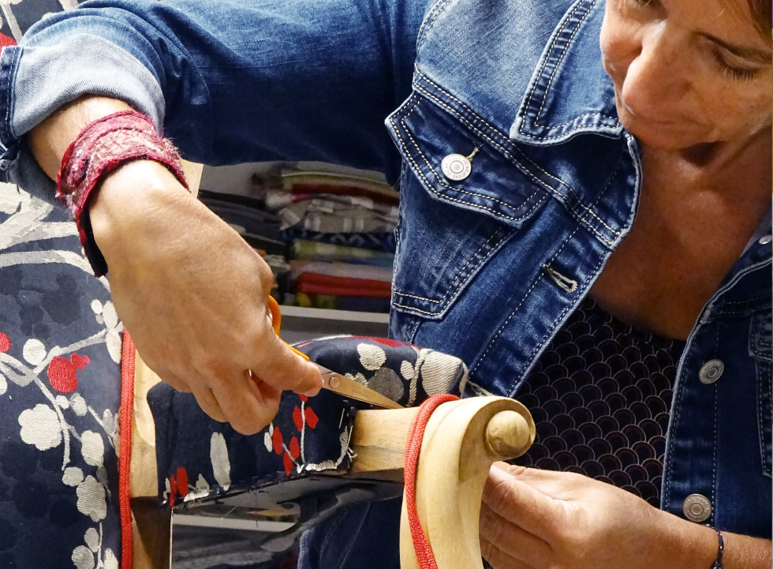
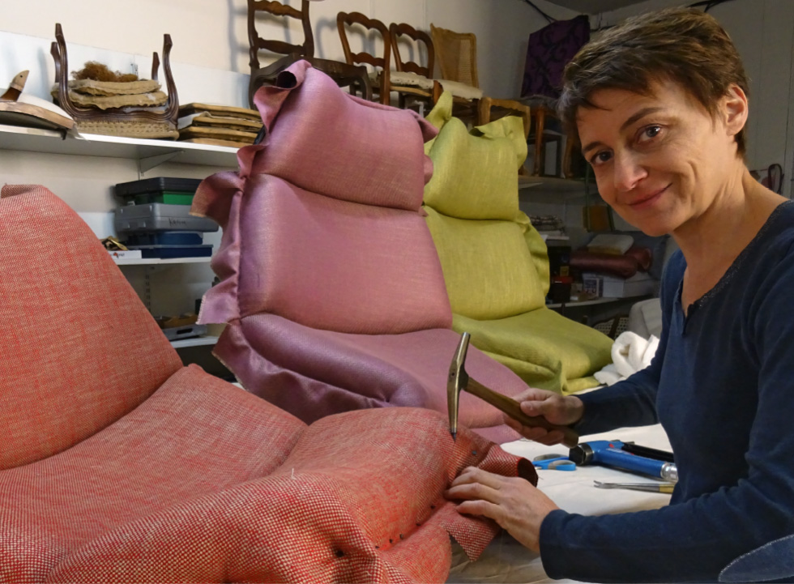

Tapissièred’ameublement
Un espace dédié à la restauration de siège et à la confection de rideaux. Une boutique avec un grand choix de tissu d’ameublement, de voilage, de cuir — Karine Viscusi vous accueille et vous oriente parmi les matières et couleurs.


Les sièges, les rideaux, la sellerie
Du fauteuil Louis XIII au canapé contemporain, du voilage au store bateau : chaque pièce repart de l’atelier avec la matière qui lui convient.

Les sièges
Voltaire, bergère, crapaud, cabriolet, club, Art Déco, canapés…
Préparer une demande →
Les rideaux
Double-rideaux, voilage, store bateau, rideau portière, store enrouleur…
Préparer une demande →
La sellerie auto, moto, nautique
Banquettes, selles, coussins de bateau : les mêmes gestes, d’autres supports.
Préparer une demande →Votre fauteuil, vos rideaux : décrivez-les en quelques clics
Choisissez votre modèle, ce que vous souhaitez faire et la matière envisagée. Votre demande est prête à envoyer à Karine, avec la liste des photos et mesures utiles pour vous répondre au plus juste.
Qu’est-ce qui doit passer à l’atelier ?
Quel modèle ressemble le plus au vôtre ?
Votre projet
Votre demande est prête
Demande pour Voltaire et compagnie
À joindre ou à apporter en boutique


Un parcours atypique, un métier choisi
« À l’issue d’un parcours professionnel atypique, j’exerce aujourd’hui le métier de tapissière d’ameublement. »
- 2008Une année de formation professionnelle qualifiante à Autun, diplôme en juin, puis quelques mois auprès d’artisans.
- 2009Ouverture de l’atelier Kavallière, à domicile.
- 2011Octobre : ouverture de la première boutique à Charolles.
- 2013Trop à l’étroit : la boutique et l’atelier s’agrandissent et deviennent « Voltaire & compagnie », avec un show-room pour présenter un large choix de tissus et de modèles de sièges.
Apprendre à refaire son fauteuil
« Dans l’atelier, j’aime aussi transmettre mon savoir-faire en accueillant les personnes qui veulent apprendre à refaire leur fauteuil une demi-journée par semaine. »
Demander une placePasser à la boutique
Voltaire et compagnie
Tapisserie d’ameublement
12, rue Gambetta
71120 Charolles
Tél. : 03 85 25 94 58 / 06 62 81 25 19
Mail : karine.viscusi@sfr.fr
Horaires
| Mardi | 9 h – 12 h · 14 h – 18 h |
| Mercredi | 9 h – 12 h · 14 h – 18 h |
| Jeudi | 9 h – 12 h · 14 h – 18 h |
| Vendredi | 9 h – 12 h · 14 h – 18 h |
| Samedi | 11 h – 12 h |
| Dimanche, lundi | Fermé |